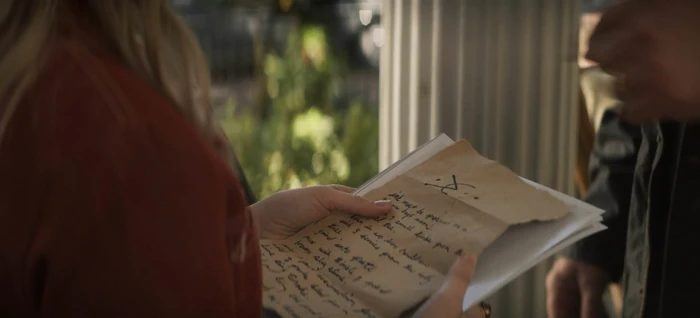

Акрида
Akrida · Монстр · угроза 5/5

Из темноты выходит существо ростом с человека: три пары сочленённых ног несут серое тело, на груди пара коротких конечностей-пинцетов, глаза без век и без зрачков. Пасть раскрывается вдоль, обнажая ряды игольчатых зубов, и из неё на землю падают капли, оставляющие дымок. Насекомое останавливается в двух шагах и поворачивает голову целиком, не двигая телом.
Улики
- Медицина.трата 1 У пострадавшего на шее след от жала с почерневшими краями, а под кожей тянется чёрная сеть сосудов, которой не было сутки назад. Трата очка: сыщик определяет, что человеком управляют извне и что рана нанесена вручную, а не оружием.
- Осмотр места. На месте найден отпечаток, оставленный тремя парами ног под углом, и на земле процарапана дорожка шириной в ладонь. Ни одно известное животное так не ходит.
- Архивы.трата 1 В записях Людей Письма упомянут ящик, изготовленный тёмной магией, который изгоняет пришельцев обратно в их мир. Трата очка: сыщик находит название — Остиум, — и понимает, что применять его надо на том, кто держит рой.
- Допрос.трата 1 Свидетель говорит, что его сосед изменился за месяц: перестал есть, отвечал чужими словами и не помнил, как оказался в другом районе. Трата очка: сыщик получает перечень мест, куда носителя водили, и выходит на след Королевы.
- Оккультизм.трата 2 Акриды — вид не с Земли, созданный как страховка на случай гибели творения, а все особи подчинены Королеве. Трата двух очков: сыщик узнаёт, что смерть Королевы обрывает связь роя и уничтожает всех остальных за мгновения.
Убивать рядовых Акрид бессмысленно: рой держится на Королеве, и связь рвётся вместе с ней — либо Остиумом, либо магией, питаемой душой.
Правило твари
Правило открывает Оккультизм (трата 2 очков) или Архивы (трата 1 очка): все Акриды подчинены Королеве, и гибель Королевы уничтожает рой через мгновения, а рядовые особи не выживают без связи. Применение: Королеву выводят на себя — через её носителя (Допрос или Следопытство, трата 1 очка) — и на неё применяют Остиум (Подготовка, одна сцена на добычу ящика, затем проверка Атлетики против Сл 4, чтобы подойти вплотную); связь рвётся, и рой гибнет сам. Второй путь — магия на основе души: колдун тратит 3 очка Стабильности и проходит проверку Воли против Сл 5, после чего Королева убита, а колдун теряет часть себя (ведущий описывает это как постоянное снижение максимума Стабильности на 1). Обычный бой с роем допустим только как задержка: Бой 9 против группы тратит её ресурсы, а не решает дело.
Заметки ведущему
Акриды дают сцену одержимости на расстоянии: носитель говорит от себя, но выполняет чужие задачи, и это должно сбивать группу с толку. Держите Остиум как дефицитный предмет — за ним нужна отдельная сцена и согласие Людей Письма. Ошибка — позволить перебить рой по одной особи или убить Королеву простым оружием: тогда пропадает единственная сильная улика дела — связь через жало.
| Карточка | |
|---|---|
| Оригинал | Akrida |
| Категория | Монстр |
| Тип | creature |
| Угроза | 5/5 |